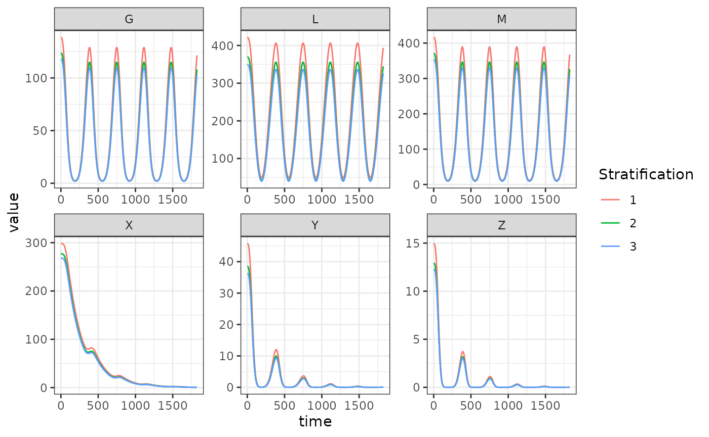

In this vignette we demonstrate how to set up a model incorporating the Le Menach model of ITN based vector control (see this paper). We use the generalized Ross-Macdonald model of adult mosquito dynamics, the SIS model of human population dynamics, and the basic competition model of aquatic mosquito dynamics to fill the dynamical components \(\mathcal{M}, \mathcal{X}, \mathcal{L}\).
Parameters
This case study will use a simple model with 3 patches, 3 population strata, and 3 aquatic habitats. As usual, we set up parameter values and compute the values of state variables at equilibrium. As part of the equilibrium calculation we must compute \(\Upsilon(0) = \exp\left(-\int_{-\tau}^{0} \Omega(s) ds \right)\); the value of the integrated mosquito demography matrix at the initial time point. To simplify things, we simply assume that conditions were constant prior to \(t=0\) so that \(\Upsilon(0) = e^{-\Omega\tau}\).
pars <- new.env()
pars$nPatches <- 3
pars$nStrata <- 3
pars$nHabitats <- 3
# human parameters
b <- 0.55
c <- 0.15
r <- 1/200
wf <- rep(1, pars$nStrata)
pfpr <- runif(n = pars$nStrata, min = 0.25, max = 0.35)
H <- rpois(n = pars$nStrata, lambda = 1000)
X <- rbinom(n = pars$nStrata, size = H, prob = pfpr)
Psi <- matrix(
data = c(
0.9, 0.05, 0.05,
0.05, 0.9, 0.05,
0.05, 0.05, 0.9
), nrow = pars$nStrata, ncol = pars$nPatches, byrow = T
)
Psi <- t(Psi)
# adult mosquito parameters
f <- 0.3
q <- 0.9
g <- 1/10
sigma <- 1/100
nu <- 1/2
eggsPerBatch <- 30
tau <- 11
# mosquito movement calK
calK <- matrix(0, pars$nPatches, pars$nPatches)
calK[upper.tri(calK)] <- 1/(pars$nPatches-1)
calK[lower.tri(calK)] <- 1/(pars$nPatches-1)
calK <- calK/rowSums(calK)
calK <- t(calK)
Omega <- make_Omega(g = g, sigma = sigma, K = calK, nPatches = pars$nPatches)
Omega_inv <- solve(Omega)
Upsilon <- expm::expm(-Omega * tau)
Upsilon_inv <- expm::expm(Omega * tau)Equilibrium
Now we compute the equilibrium conditions for the adult mosquitoes and human populations, such that the PfPR in the human population would be maintained at the input levels if conditions were unchanging.
# derived EIR to sustain equilibrium pfpr
EIR <- diag(1/b, pars$nStrata) %*% ((r*X) / (H - X))
# ambient pop
W <- Psi %*% H
# biting distribution matrix
beta <- diag(wf) %*% t(Psi) %*% diag(1/as.vector(W), pars$nPatches)
# kappa
kappa <- t(beta) %*% (X*c)
# equilibrium solutions
Z <- diag(1/(f*q), pars$nPatches) %*% ginv(beta) %*% EIR
MY <- diag(1/as.vector(f*q*kappa), pars$nPatches) %*% Upsilon_inv %*% Omega %*% Z
Y <- Omega_inv %*% (diag(as.vector(f*q*kappa), pars$nPatches) %*% MY)
M <- MY + Y
G <- solve(diag(nu+f, pars$nPatches) + Omega) %*% diag(f, pars$nPatches) %*% M
Lambda <- Omega %*% MGiven the equilibrium value of \(\Lambda\) required to sustain mosquito populations at such a level sufficient to maintain transmission at that level of PfPR, as well as values for \(\psi\) (maturation rate) and \(\phi\) (density independent mortality), we compute equilibrium values of \(L\) (aquatic mosquito density) and \(\theta\) (density dependent mortality).
# aquatic habitat membership matrix (assume 1 habitat per patch)
calN <- matrix(0, pars$nPatches, pars$nHabitats)
diag(calN) <- 1
# egg dispersal matrix (assume 1 habitat per patch)
calU <- matrix(0, pars$nHabitats, pars$nPatches)
diag(calU) <- 1
alpha <- as.vector(solve(calN) %*% Lambda)
psi <- 1/10
phi <- 1/12
eta <- as.vector(calU %*% G * nu * eggsPerBatch)
L <- alpha/psi
theta <- (eta - psi*L - phi*L)/(L^2)Setup
Now that all state variables have been solved at equilibrium, we can
set up the parameters and components of the system. We also need to set
up a time-varying function to compute the coverage of ITNs at any time
point. We use a sine curve with a period of 365 days which goes from 0
to 1 over that period. This must be a function that takes a single
argument t (time) and returns a scalar value.
pars$calU <- calU
pars$calN <- calN
# ITN coverage
ITN_cov <- function(t) {(sin(2*pi*t / 365) + 1) / 2}
# set parameters
make_parameters_exogenous_null(pars)
make_parameters_vc_lemenach(pars, phi = ITN_cov)
make_parameters_MYZ_RM_dde(pars = pars, g = g, sigma = sigma, calK = calK, f = f, q = q, nu = nu, eggsPerBatch = eggsPerBatch, tau = tau, M0 = M, G0 = G, Y0 = Y, Z0 = Z)
make_parameters_L_basic(pars = pars, psi = psi, phi = phi, theta = theta, L0 = L)
make_parameters_X_SIS(pars = pars, b = b, c = c, r = r, Psi = Psi, wf = wf, X0 = X, H = H)
make_indices(pars = pars)Solve
After setting parameters we must set the initial conditions of the model. Then we’re ready to solve the model! We integrate over a 5 year interval, to show the effects of the “seasonal” ITN coverage.
# ICs
y <- rep(NaN, max(pars$X_ix))
y[pars$L_ix] <- pars$Lpar$L0
y[pars$X_ix] <- pars$Xpar$X0
y[pars$M_ix] <- pars$MYZpar$M0
y[pars$G_ix] <- pars$MYZpar$G0
y[pars$Y_ix] <- pars$MYZpar$Y0
y[pars$Z_ix] <- pars$MYZpar$Z0
y[pars$Upsilon_ix] <- as.vector(Upsilon)
# solve the model
out <- dede(y = y, times = 0:(365*5), func = xDE_diffeqn, parms = pars)We can plot the output to study the effects of the seasonal ITN coverage on the state variables. We see that total and parous mosquito densities \(M\) and \(G\) now vary in a sinusoidal manner as coverage changes, as does \(L\), larval density, as the number of ovipositing mosquitoes changes. Because in addition to increasing mosquito mortality, ITNs also decrease the feeding rate and proportion of bloodmeals taken on humans due to the repellency effect, we see the densities of infected and infectious mosquitoes (\(Y\) and \(Z\)) steadily decrease over time as there are no longer sufficient bloodmeals being taken to sustain prevalence. A similar pattern appears in human prevalence \(X\), with slower dynamics due to the slow recovery rate of untreated infection.
colnames(out)[pars$L_ix+1] <- paste0('L_', 1:pars$nHabitats)
colnames(out)[pars$M_ix+1] <- paste0('M_', 1:pars$nPatches)
colnames(out)[pars$G_ix+1] <- paste0('G_', 1:pars$nPatches)
colnames(out)[pars$Y_ix+1] <- paste0('Y_', 1:pars$nPatches)
colnames(out)[pars$Z_ix+1] <- paste0('Z_', 1:pars$nPatches)
colnames(out)[pars$X_ix+1] <- paste0('X_', 1:pars$nStrata)
out <- out[, -c(pars$Upsilon_ix+1)]
out <- as.data.table(out)
out <- melt(out, id.vars = 'time')
out[, c("Component", "Stratification") := tstrsplit(variable, '_', fixed = TRUE)]
out[, variable := NULL]
ggplot(data = out, mapping = aes(x = time, y = value, color = Stratification)) +
geom_line() +
facet_wrap(. ~ Component, scales = 'free') +
theme_bw()